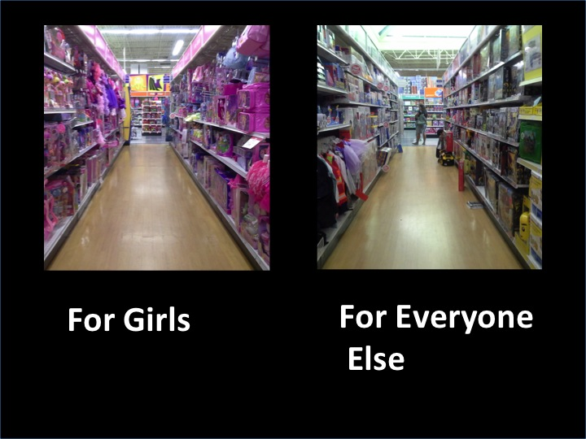

Taniya Prabhakar


Thoughts & Opinions
Getting Women Into Tech
Houston, We Have A Problem
03/01/2015
From a young age, girls are encouraged to choose pretty dolls and pink, sparkly toys rather than science kits and LEGOs. Have you ever noticed the difference between the area where the Easy Bake Oven is compared to the Nerf guns? Companies have organized toy sections with an inherent gender bias - girls like pink, and boys like blue. If children are growing up with this clear separation, it is alright to assume that their parents may have grown up in a similar environment, which normalizes the thought of gender-centric roles and capabilities. This doesn't allow them to see the overall influence their thoughts and actions have on their child's future.
When personal computers started showing up in the marketplace, the amount of women earning Computer Science degrees started falling drastically. Computers back in the mid-80's weren't seen as they are today - an essential, highly functioning piece of technology that has unfathomably abilities. These didn't do much more than allow you to play a game of pong or some shooting games, which is why they were seen as toys that should primarily be marketed towards boys.
Movies during this period had an influence on mindset too. The tech savvy nerd winning the girl in the face of adversity was a common theme, so how were girls supposed to believe in themselves when everything was marketed against them? With little to no exposure to computers, women were already behind when entering college classes filled with men who had been tinkering with computers for years.
The self-doubt and reluctance is a byproduct of feeling like everyone already knows what you want to ask. Professors who themselves had been lucky enough to interact with computers didn't always realize that not everyone did. With these feelings of discomfort piling up, women began switching majors, which explains the lack of women in technology today.
Deep Conditioned Solution
Encouraging women to join technology and spreading awareness of the implicit biases are two solutions, amongst many.
The technology industry is recognizing a huge need for good developers, and women constitute an untapped pool of talent. By encouraging more women to study Computer Science or at least become interested in learning about that material, they are hoping to recruit. There are more coding event meetups for women, scholarships for women in STEM, and mentors willing to provide advice than before, but that needs to continue and be more accessible. Women will not only fill the technical needs of these companies, but also create a better workplace with added diversity.
Becoming aware of how marketing influences your thought process, and breaking out of that predefined box, definitely starts at home. The way marketing is done does indeed need a drastic change, but parents need to do their part by not upholding inherent gender biases. If your daughter wants to get her hands dirty in a project, let her. If she wants to run weird expirements on potatoes and make a mess, give her the freedom to do so. If she works alongside her brother to create a model airplane or rocketship, don't tell her she should let her brother do it because she isn't capable...she just might believe you.